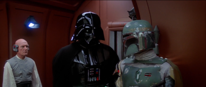
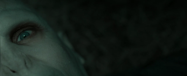
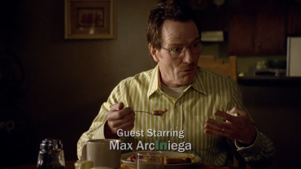

Villains
The make of great movie devices
Necessary Evil
Rather than protagonists, villains are often the characters we remember best.
The best villains are unique, fearsome and, most of all, relatable.
For this article, Online Museum documents iconic movie villains while focusing on their crucial ability to win our hearts and understanding.
With each villain, we get closer to our final understanding.
So, as they drive films, they even drive this story!
Batman: The Dark Knight (2008)
"No story exists without evil"
Here The Joker says: "I don't want to kill you! You. Complete. Me."
Yin needs Yang and good needs evil. In films evil is what gives protagonists meaning. Be it concrete (say, a character as the Joker) or abstract (say, alcohol in A Star Is Born), it is the driver of the story. As without evil, what need for a story would there be?
Contrast
Star Wars: The Empire Strikes Back (1980)
Villains such as Darth Vader and Boba Fett (seen above) are the most collectable Star Wars figures to this day.
"Heroes bring
memorable visuals"
Many Filmmakers love characterizing evil. It enables contrast and memorability: Darth Vader's mask, cape and dark persona are the strongest (visual) clues in Star Wars. Thése are remembered to this day and make 'good guy' Luke Skywalker a hero, while he brings little memorability himself. Star Wars shows us how Villains can drive movies more than anything.
The Villain's journey
Harry Potter : The Deathly Hallows Part 2 (2011)
Voldemort's face is a canvas: his journey from man to villain is manifested on it.
In the real world, people cannot be purely 'evil'. Instead, they may feel marginalized or picked on. In Yoda's words:
"Fear is the path to the dark side…fear leads to anger…anger leads to hate…hate leads to suffering” ~ Star Wars: The Phantom Menace
With this quote, Star Wars character Yoda explains humans' inherent understanding of evil; people are not born bad, but may be driven off the grid by bad environments.
It is this inherency that explains why mere evil doesn't work for villains.
In the greatest movies of all time, villains are precisely developed to feel realistic.
Earlier we learned that villains drive the story. So, relatability with the villain is crucial for our connection to the story.
Even for abstract evil, such as alcoholism, our understanding of pressuring elements makes us love the story being told.
Films that can tap well into such understanding, are the best of the best.
Think about it: Darth Vader, The Joker and Voldemort are all very nuanced characters and have made their respective films great.
"Villains help us
connect with the story"
Harry Potter : The Deathly Hallows Part 2 (2011)
The real hero in Harry Potter is ironically anti-hero Severus Snape, whose beliefs proved stronger than anything. They could withstand any environment and marginalization for a whole lifetime. Above we see how Snape shows Harry his true identity, love and courage.
"There is soft in the hard, and hard in the soft" ~ Daoistic principle
"Realism makes
us take
the danger seriously"
It is villains' relatability that makes us buy their evil. As they have realistic features, we unconsciously take their danger seriously. Without Voldemort's journey from marginalized orphan to monster, Harry Potter would in no way be as good as it is. Before Voldemort split his soul and became monster-like, he was Tom Riddle and closely resembled protagonist Harry Potter. J. K. Rowling briliantly plays with the concept of villains by showing how Harry Potter is led on the same dark path. The story seemingly suggests that if it were not for Harry's loving environment, he would go down the same path as marginalized Tom Riddle.
Fusion
Breaking Bad (2008-2013)
Season 1 Episode 2
Walter White could be any one of us: he is the relatable houseman. For instance, he enjoys breakfast with his family above.
"Some Villains
make us consider morality"
In the above we learn that evil's lure makes for beautiful stories. Playing with good and bad adds depth to characters and films as a whole. Breaking Bad lends its success to protagonist Walter White's path from weak husband to merciless criminal. The good and evil are thus fused into one character. It makes this film so incredibly good: although we're supporting Walter White he's in fact really bad. It drives us to constantly question morality: is 'good' our social rules, or a man's ability to go through fire to save his family?
Conclusion
For Darth Vader, The Joker, Voldemort and Walter White, the same goes. They drive the story. They fuse innocence and evil, abstract and concrete, protagonist and story. In other words, villains are devices of true art. When they are done well, films instantly acquire world-class potential.
See Also